Nexus2迁移升级到Nexus3
与 Nexus 2.x 相比，Nexus 3.x 为我们提供了更多实用的新特性，随着 Nexus 3.x 对 Maven 的支持越来稳定，很多公司和组织都陆续将数据从 Nexus 2.x 迁移升级到 Nexus 3.x。
SonaType 官方建议我们，使用最新版本 Nexus 2.x 升级到最新版本 Nexus 3.x，并在 Nexus 升级兼容性 一文中为我们提供了各个版本 Nexus 升级到最新版本 Nexus 3.x 的流程，如下表。
若 Nexus 的版本升级是在大版本相同的情况下进行的（例如从 Nexus 2.11.4-01 升级到 Nexus-2.14.20-02），则只需要将新的 Nexus 工作目录复制到现有版本的目录下，替换旧版本 Nexus 的工作目录即可。
1） 使用 win +R 快捷键，打开运行窗口，输入 services.msc，点击确定按钮，如图 2 所示。
2）进入Windows 服务列表，找到服务名为 nexus 的服务。
3）双击 nexus 服务，打开服务属性窗口，可以看到该服务指向的是旧版本的 Nexus 2.x。
4）在旧版本 Nexus 应用程序目录下的 bin\jsw\windows-x86-64 目录（根据本机操作系统而定）中，以管理员身份运行 uninstall-nexus.bat，卸载 nexus 服务。
5）在新版本 Nexus 应用程序目录下的 bin\jsw\windows-x86-64 目录（根据本机操作系统而定）中 ，以管理员身份运行 install-nexus.bat，安装 nexus 服务。
6）再次进入服务列表，查看 nexus 服务属性，可以看到该服务已经指向新版本 Nexus 实例。
Nexus 2.x 升级到 Nexus 3.x 通常需要如下 4 步：
2）点击 Capabilities 列表上方的 New 按钮，新建一个类型（Type）为 Upgrade: Agent 的功能，并填写 Access Token，最后点击下方的 Add 按钮，如下图。
3) 返回列表页，可以看到已经添加了 Upgrade: Agent，选中该功能可以在下方查看或修改其中配置，如下图。
1）点击最上方的齿轮状图标，切换到 Nexus 3.x “管理和配置”模块，然后点击 System 下的 Capabilities ，查看 Nexus 3.x 功能列表，如下图。

2）点击列表上方的 Create capability 按钮，创建一个类型（Type）为 Upgrade 的功能，如下图。
3）随后我们发现，不但在功能列表中新增了一条类型为 Upgrade 的数据，而且在 System 下还多出了一个 Upgrade 菜单，如下图。
2）跳转到 “代理链接（Agent Connection）”页面，配置 URL 、Access Token 等字段，配置完成后，点击下方的 Next 按钮。
以上字段说明如下：
3）跳转到“内容”页面，在该页面中，我们需要选择升级过程中传输的内容，包括以下 2 项：
选择完成后，点击下方的 Next 按钮。
4）跳转到“仓库默认设置（Repository Defaults）”页面，设置仓库内容的存储位置（Blob store）以及数据传输方式（Data Transfer Method），设置完成后，点击下方的 Next 按钮。
5）跳转到“仓库（Repositories）” 页面，选择迁移的仓库，选择完成后，点击下方得 Next 按钮，如下图。
除了选择升级得仓库，点击仓库列表最后一列的配置图标，可以为仓库自定义升级选项，如下图。
6）配置完成后，点击最下方的 Next 按钮，跳转到 “预览（Preview）”页面。该页面中展示了所有的升级配置信息，确认无误后，点击下面的 Begin 按钮，开始运行升级程序，如下图。
7）开始升级前，会先跳转到 “准备（Preparing）”页面，先进行简短的准备工作。当准备工作进度条到达 100% 后，点击下方的 Continue 按钮，继续进行下一步。
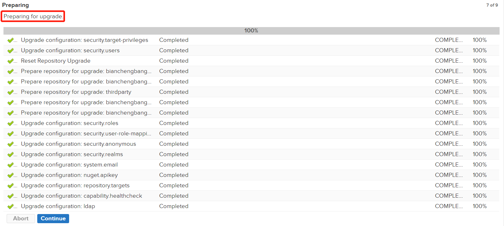
8）跳转到“同步（Synchronizing）”页面，在这里 Nexus 升级程序会执行两步操作，扫描仓库和数据同步。仓库扫描完成后，点击下方的 Continue 按钮，开始同步数据。同步开始以后，再对 Nexus 2.x 仓库所做的任何修改都不会同步到 Nexus 3.x 中。
9）同步完成后，点击下方的 Done 按钮，退出升级程序。
10）点击最上方的立方体图标，切换到 Nexus 3.x “浏览”模块，点击左侧的 Browse 菜单，浏览 Nexus 3.x 仓库列表，可以看到 Nexus 2.x 中的仓库及构件都已经迁移到 Nexus 3.x 了。
至此，我们就完成了将数据从 Nexus 2.x 迁移到 Nexus 3.x 的全部工作。
SonaType 官方建议我们，使用最新版本 Nexus 2.x 升级到最新版本 Nexus 3.x，并在 Nexus 升级兼容性 一文中为我们提供了各个版本 Nexus 升级到最新版本 Nexus 3.x 的流程，如下表。
| 旧版本 | 升级流程 |
|---|---|
| 3.1.0 或更高版本 |
|
| 3.0.0 到 3.0.2 |
|
| 最新 2.x 版本 |
|
| 2.0 及 其他 2.x 版本 |
|
| 1.x |
|
由上表可知，从 Nexus 2.x 升级到 Nexus 3.x 需要 2 步：注：Nexus 1.x 不支持直接升级到 2.7.2 之后的版本
- 升级到 Nexus 2.x 最新版本
- 升级到 Nexus 3.x 最新版本
本节我们以 Nexus 2.11.4-01 为例，演示如何将 Nexus 2.x 升级到 Nexus 3.x。
升级到 Nexus 2.x 最新版本
1. 下载并提取 Nexus 2.x 最新版本
下载并解压最新版本的 Nexus 2.x（目前为 Nexus-2.14.20-02），具体下载和解压步骤请参考 Nexus 2.x 下载和安装2. 替换工作目录
无论是 Nexus 2.x 还是 Nexus 3.x，其安装包在解压后都包含两部分：- nexus-版本号 Nexus 应用程序目录
- sonatype-work Nexus 工作目录（真正的仓库，同时包含了 Nexus 的配置，如定时任务、用户配置）
若 Nexus 的版本升级是在大版本相同的情况下进行的（例如从 Nexus 2.11.4-01 升级到 Nexus-2.14.20-02），则只需要将新的 Nexus 工作目录复制到现有版本的目录下，替换旧版本 Nexus 的工作目录即可。
3. 修改配置文件
如果用户对以下文件的默认配置进行了任何更改，则需要在新版本中手动进行相同的更改，Nexus 不支持将这些文件从一个版本复制到另一个版本。- <应用程序目录> /conf/nexus.properties
- <应用程序目录> /conf/jetty*.xml
- <应用程序目录> /bin/jsw/conf/wrapper.conf
- <应用程序目录> /nexus/WEB-INF/classes/ehcache.xml
- <应用程序目录> /conf/logback*.xml
由于 Nexus 升级迁移过程需要同时启动 Nexus 2.x 和 Nexus 3.x，为了防止端口（两者默认端口都是 8081）冲突，我们可以将 Nexus 2.x 启动时监听的端口（端口在 <应用程序目录>/conf/nexus.properties 中配置）修改为 8082。
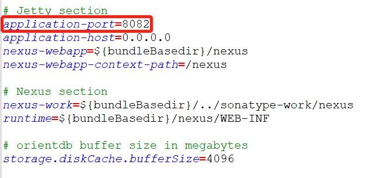
图1：修改 Nexus 端口
4. 将 Nexus 2 服务指向新实例
在以上步骤完成后，如果旧版本 Nexus 是作为 Windows 服务运行的，那么我们需要将旧版本的 Nexus 服务卸载，然后使用新实例重新安装 Nexus 服务，具体操作步骤如下。1） 使用 win +R 快捷键，打开运行窗口，输入 services.msc，点击确定按钮，如图 2 所示。
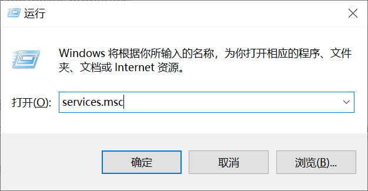
图2：运行窗口
2）进入Windows 服务列表，找到服务名为 nexus 的服务。
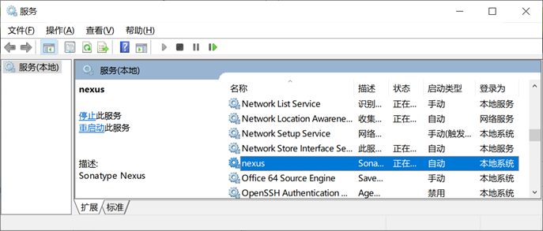
图3：nexus 服务
3）双击 nexus 服务，打开服务属性窗口，可以看到该服务指向的是旧版本的 Nexus 2.x。
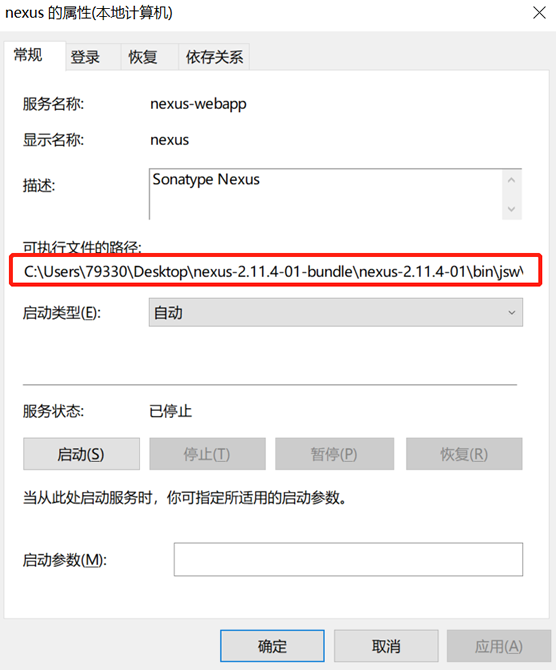
图4：nexus 服务属性
4）在旧版本 Nexus 应用程序目录下的 bin\jsw\windows-x86-64 目录（根据本机操作系统而定）中，以管理员身份运行 uninstall-nexus.bat，卸载 nexus 服务。
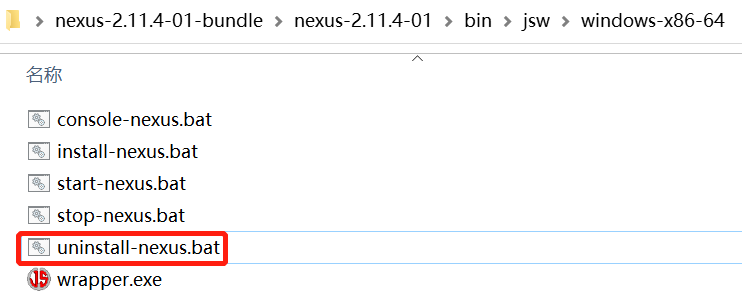
图5：卸载现有版本 Nexus 的服务
5）在新版本 Nexus 应用程序目录下的 bin\jsw\windows-x86-64 目录（根据本机操作系统而定）中 ，以管理员身份运行 install-nexus.bat，安装 nexus 服务。
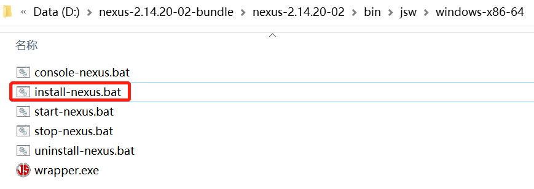
图6：安装新版本 Nexus 服务
6）再次进入服务列表，查看 nexus 服务属性，可以看到该服务已经指向新版本 Nexus 实例。
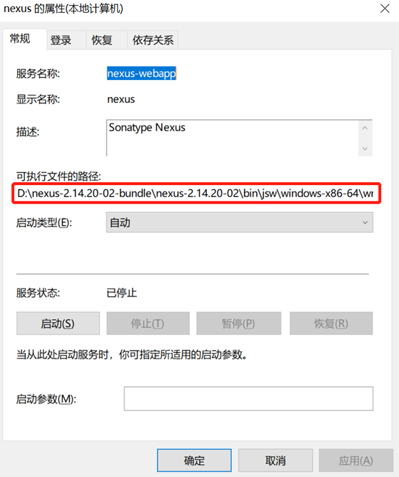
图7：nexus 服务指向新版本 Nexus
5. 启动新实例
在新版本 Nexus 的 <应用程序目录>\bin\jsw\windows-x86-64 目录（根据本机操作系统而定），以管理员身份运行 start-nexus.bat。启动成功后，在浏览器地址栏输入：http://localhost:8082/nexus，访问新版本 Nexus 2.x 用户界面。
图8：升级后 Nexus 界面（猛击图片，查看原图）
升级到 Nexus 3.x 最新版本
将 Nexus 2.x 升级到 Nexus 3.x，从本质上说就是将 Nexus 2.x 中的数据传输或迁移到 Nexus 3.x。Nexus 2.x 升级到 Nexus 3.x 通常需要如下 4 步：
- Nexus 2.x 启用 Upgrade: Agent （升级代理）功能
- Nexus 3.x 启用 Upgrade （升级）功能
- 在 Nexus 3.x 中配置升级信息
- 运行升级程序
1. Nexus 2.x 启用 Upgrade: Agent 功能
Nexus 2.x 升级到 Nexus 3.x 的第一步，就是在 Nexus 2.x 中开启 Upgrade: Agent 功能，操作步骤如下。
1）在 Nexus 2.x 用户界面左侧的导航栏中，点击 Administration 下的 Capabilities，查看 Nexus 2.x 功能列表，如下图。
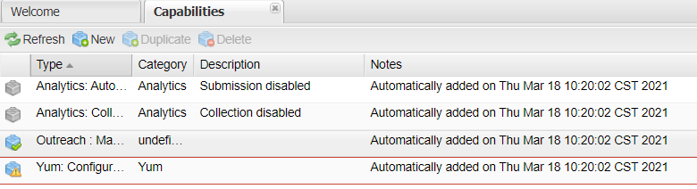
图9：Nexus 2.x 功能列表
2）点击 Capabilities 列表上方的 New 按钮，新建一个类型（Type）为 Upgrade: Agent 的功能，并填写 Access Token，最后点击下方的 Add 按钮，如下图。
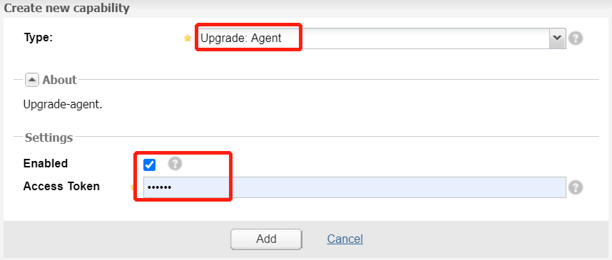
图10：Nexus 2.x 添加 Upgrade: Agent 功能
3) 返回列表页，可以看到已经添加了 Upgrade: Agent，选中该功能可以在下方查看或修改其中配置，如下图。
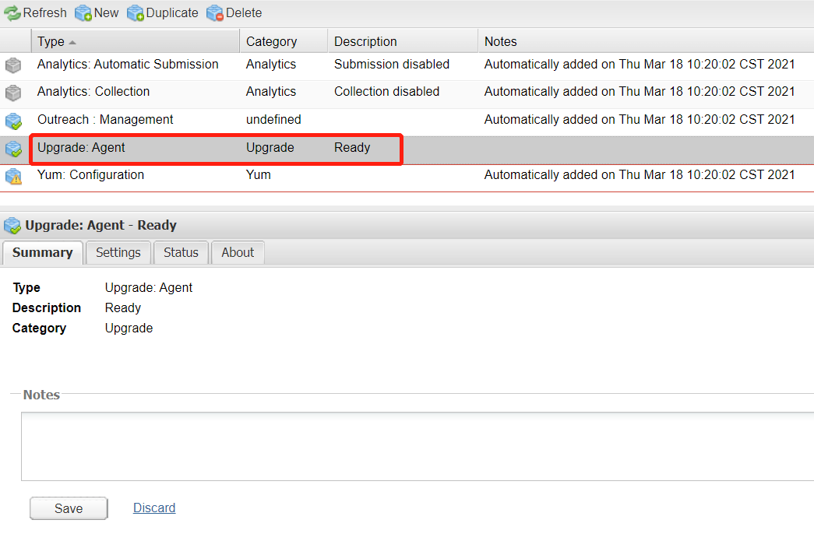
图11：Nexus 2.x Upgrade：Agent
这里需要注意的是，Access Token 扮演的角色十分的重要，它是 Nexus 之间数据传输的重要凭证之一。
Nexus 3.x 启用 Upgrade 功能
接下来，我们需要在 Nexus 3.x 中开启 Upgrade 功能，用来接收来自 Nexus 2.x 传输的数据，具体步骤如下。1）点击最上方的齿轮状图标，切换到 Nexus 3.x “管理和配置”模块，然后点击 System 下的 Capabilities ，查看 Nexus 3.x 功能列表，如下图。
图12：Nexus 3.x 功能列表（猛击图片，查看原图）
2）点击列表上方的 Create capability 按钮，创建一个类型（Type）为 Upgrade 的功能，如下图。
图13：Nexus 3.x 新建 Upgrade 功能
3）随后我们发现，不但在功能列表中新增了一条类型为 Upgrade 的数据，而且在 System 下还多出了一个 Upgrade 菜单，如下图。
图14：Nexus 3.x 新增 Upgrade 菜单
运行升级程序
1）Nexus 3.x 启用升级功能后，点击 System 下的 Upgrade ，进入升级程序概述。概述中介绍了升级过程中的注意事项、允许升级的内容、无法升级的内容。阅读完成后，点击下方的 Next 按钮。
图15：Nexus 升级程序概述（猛击图片，查看原图）
2）跳转到 “代理链接（Agent Connection）”页面，配置 URL 、Access Token 等字段，配置完成后，点击下方的 Next 按钮。
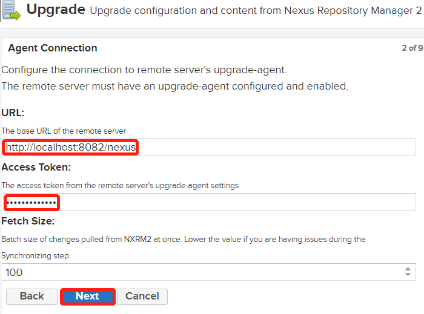
图16：Nexus 代理连接
以上字段说明如下：
- URL：Nexus 2.x 的完整访问地址，例如 http://localhost:8082/nexus。
- Access Token：Nexus 2.x 启用升级代理（Upgrade: Agent）功能时配置的 Access Token。
3）跳转到“内容”页面，在该页面中，我们需要选择升级过程中传输的内容，包括以下 2 项：
- 仓库的配置及内容
- Nexus 服务器配置
选择完成后，点击下方的 Next 按钮。
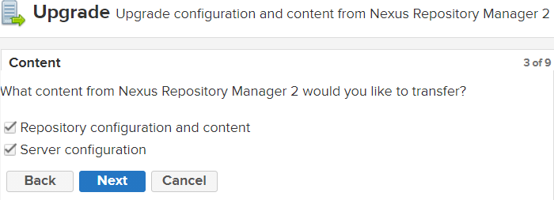
图17：Nexus Content
4）跳转到“仓库默认设置（Repository Defaults）”页面，设置仓库内容的存储位置（Blob store）以及数据传输方式（Data Transfer Method），设置完成后，点击下方的 Next 按钮。
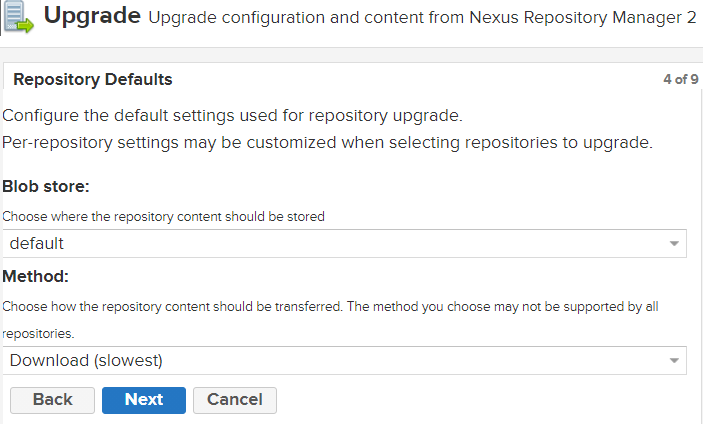
图18：Nexus 3.x Repository Defaults
5）跳转到“仓库（Repositories）” 页面，选择迁移的仓库，选择完成后，点击下方得 Next 按钮，如下图。
图19：Nexus 升级 仓库选择
除了选择升级得仓库，点击仓库列表最后一列的配置图标，可以为仓库自定义升级选项，如下图。
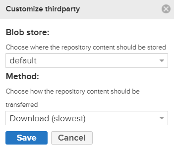
图20：Nexus 仓库自定义升级选项
6）配置完成后，点击最下方的 Next 按钮，跳转到 “预览（Preview）”页面。该页面中展示了所有的升级配置信息，确认无误后，点击下面的 Begin 按钮，开始运行升级程序，如下图。
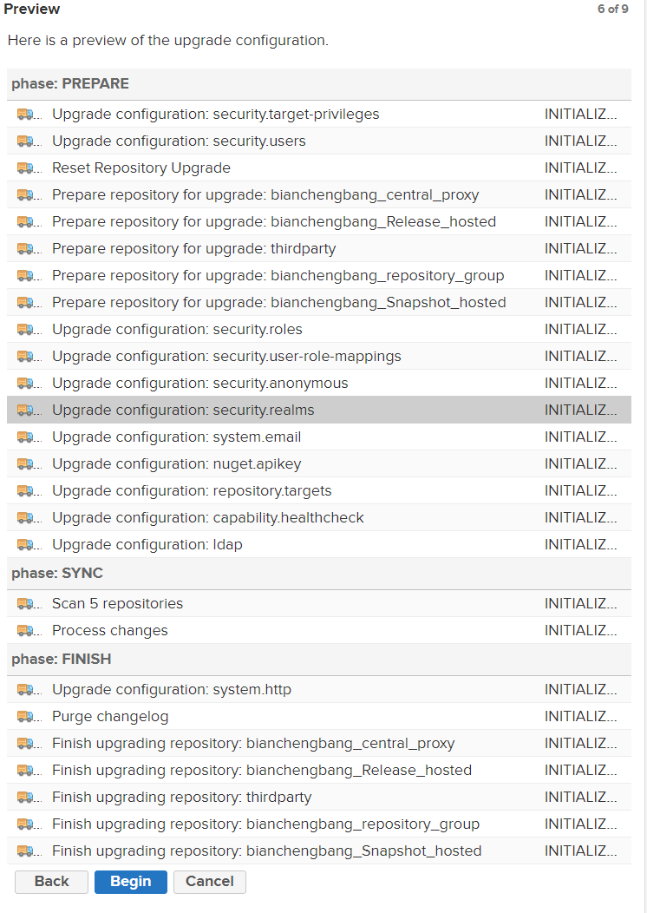
图21：Nexus 升级预览
7）开始升级前，会先跳转到 “准备（Preparing）”页面，先进行简短的准备工作。当准备工作进度条到达 100% 后，点击下方的 Continue 按钮，继续进行下一步。
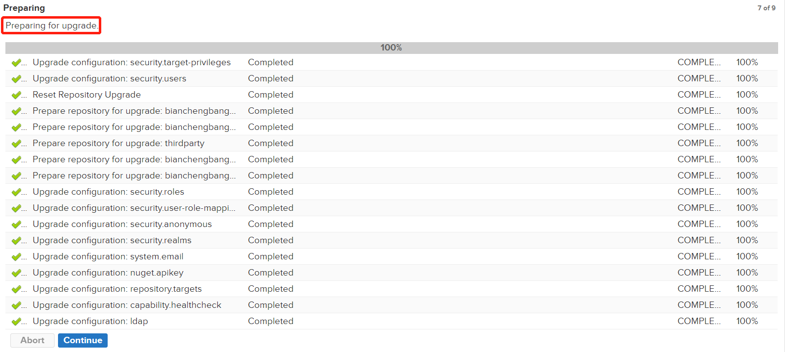
: 图22：Nexus 升级准备工作（猛击图片，查看原图）
8）跳转到“同步（Synchronizing）”页面，在这里 Nexus 升级程序会执行两步操作，扫描仓库和数据同步。仓库扫描完成后，点击下方的 Continue 按钮，开始同步数据。同步开始以后，再对 Nexus 2.x 仓库所做的任何修改都不会同步到 Nexus 3.x 中。
图23：Nexus 同步（猛击图片，查看原图）
9）同步完成后，点击下方的 Done 按钮，退出升级程序。
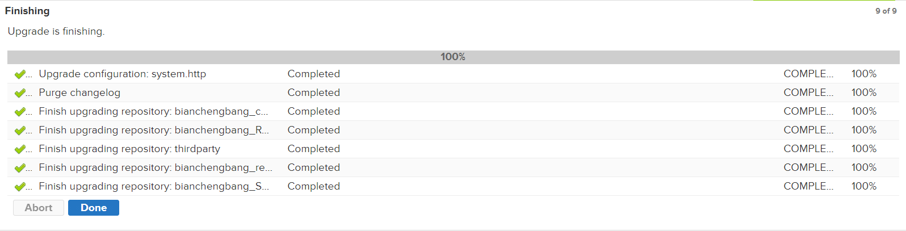
图24：Nexus 迁移升级完成（猛击图片，查看原图）
图24：Nexus 迁移升级完成（猛击图片，查看原图）
10）点击最上方的立方体图标，切换到 Nexus 3.x “浏览”模块，点击左侧的 Browse 菜单，浏览 Nexus 3.x 仓库列表，可以看到 Nexus 2.x 中的仓库及构件都已经迁移到 Nexus 3.x 了。
图25：Nexus 3.x 升级仓库列表
至此，我们就完成了将数据从 Nexus 2.x 迁移到 Nexus 3.x 的全部工作。
关注公众号「站长严长生」，在手机上阅读所有教程，随时随地都能学习。内含一款搜索神器，免费下载全网书籍和视频。

微信扫码关注公众号

{kind=link}